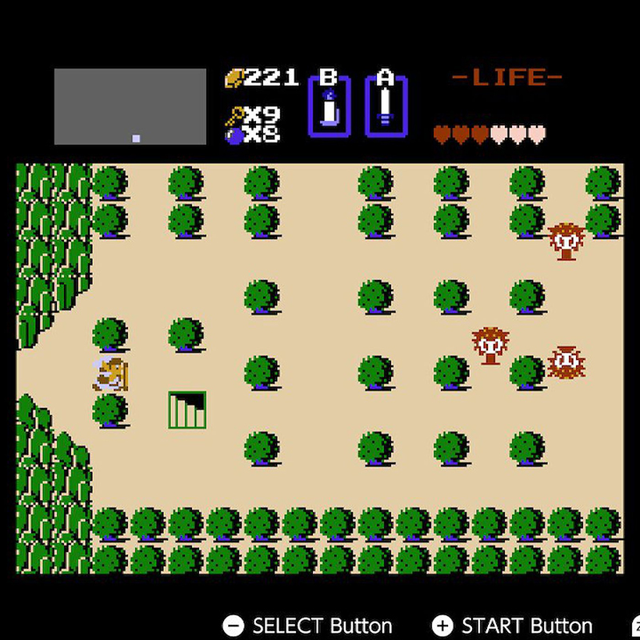
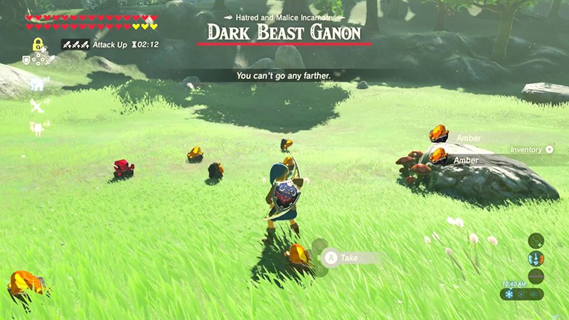

The Legend of Zelda
The Game
The Legend of Zelda is a high fantasy action-adventure video game franchise created by Japanese game designers Shigeru Miyamoto and Takashi Tezuka. It is primarily developed and published by Nintendo, although some portable installments and re-releases have been outsourced to Capcom, Vanpool, and Grezzo.
Visual History
Where it started...
...present day.
